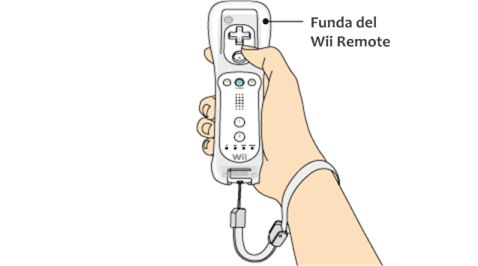
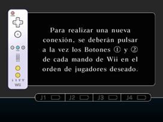

3 |
Preparación del control |
 |
La manera en que se sujeta el control depende del tipo de control. Usa el control como se indica en las siguientes imágenes. Nota: Para obtener más información sobre cómo ajustar la correa o funda del Wii Remote, consulta el manual de operaciones de la consola Wii o el manual de la funda del Wii Remote.

IMPORTANTE: Usa siempre la correa cuando uses el control Wii Remote. Consulta Precauciones de uso en la página 2. Nota: Consulta el manual de operaciones para aprender a usar cada tipo de control distinto.
Este procedimiento te permitirá establecer la comunicación entre el control y la consola Wii. El Wii Remote incluido con esta consola Wii ya ha sido sincronizado con la misma. Existen dos métodos para sincronizar un control con la consola Wii. MODO NORMAL: El modo normal de sincronización se utiliza para conectar controles adicionales a la consola Wii o para volver a sincronizar el Wii Remote incluido con la consola Wii. Una vez sincronizado, el control permanecerá conectado a la consola Wii a menos que sobrescribas dicho ajuste al sincronizar el control con otra consola Wii diferente. MODO ÚNICO: Este modo te permitirá usar el Wii Remote temporalmente con la consola Wii de un amigo, y que tus amigos puedan usar sus controles con tu consola Wii. No sobrescribirá el ajuste del modo normal guardado en el Wii Remote. En este modo, el control solo se comunicará con la nueva consola Wii mientras esté encendida. Al apagarla, el control dejará de estar sincronizado con la consola Wii. Nota: Solo un Wii Remote sincronizado en el modo normal puede encender o apagar la consola Wii. Sincronización en modo normal Nota: Asegúrate de que el Wii Remote tiene pilas.
Cuando se haya establecido la conexión, el indicador que señala el número del jugador permanecerá encendido. 
Debes seguir este procedimiento con cada Wii Remote adicional que conectes a la consola Wii. Nota: La frecuencia de parpadeo de los indicadores de jugador cambiará dependiendo del nivel de carga de las pilas. Sincronización en el modo único Nota: Este modo desactiva de forma temporal el ajuste de sincronización del modo normal para todos los controles hasta que se apaga la consola Wii. Cuando se vuelva a encender la consola Wii, se restaurará la configuración del modo normal.


IMPORTANTE: Si el Wii Remote pierde la sincronización con la consola Wii y no puedes volver a sincronizarlo, revisa el apartado "Solución de problemas" del manual de operaciones de la consola Wii. |

 |
 |
 |